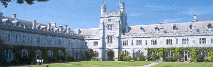
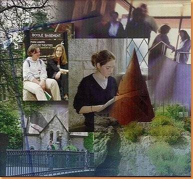
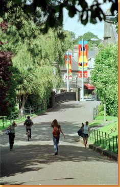

| Home | What To Do | University College Cork | Cork City Gaol | Cork City Hall | Fota Wildlife Park |
University College Cork

Historical Background
University College Cork (UCC) is one of four constituent universities of the federal National University of Ireland. Founded in 1845, UCC is one of Ireland’s oldest institutes of higher learning and was originally established as Queen’s College. At the same time two other Queen’s Colleges were established in southern and northern Ireland-one in Galway, the other in Belfast. The original site chosen for the University is believed to have a connection with the patron saint of Cork, St Finbarr who set up a monastery and school of learning in close proximity to the University. Hence the University’s motto “Where Finbarr Taught, Let Munster Learn.”
UCC Today

University College Cork is situated in south-west Ireland and is a progressive, dynamic university of over 14,500 students. The University has a current enrolment of over 12,000 degree candidates. In addition, 2,500 students are enrolled in one or more of the University’s postgraduate courses. UCC’s widely diverse student-body includes over 1,000 international students representing 60-plus countries worldwide. 3,000 people work at UCC, including more than 800 faculty

UCC is Ireland’s leading institute. It is the highest research income earner in the Irish state. The University offers an innovative, research-led curriculum, taught by world-class academics who consistently attract a quality student intake. The University’s internal research reputation spans all of its faculties where it offers over 120 degree and professional programmes through seven schools and 27 departments. The University has eight faculties in:
Arts
Celtic Studies
Commerce
Engineering
Food Science and Technology
Law
Health & Medicine
Science